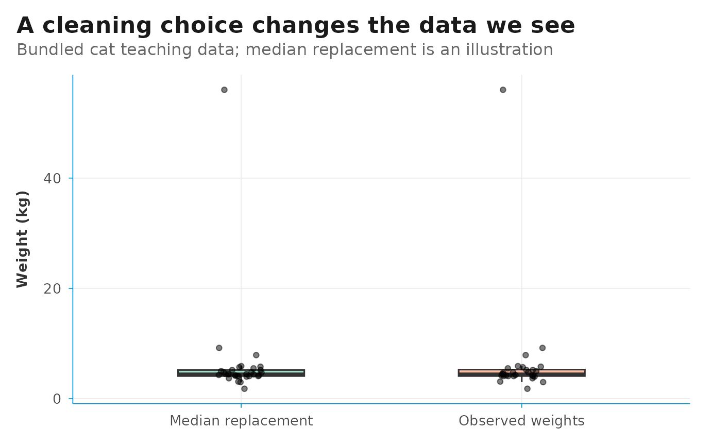

A guided data-quality workflow
Source:vignettes/data-quality-workflow.Rmd
data-quality-workflow.Rmd
library(cataScience)
library(readxl)
library(dplyr)
library(tidyr)
library(stringr)
library(ggplot2)
library(DSIR)
This 20–30 minute lab follows Import → Cleaning → Visualize. The aim is to explain a cleaning decision and its effect on a conclusion. Use the bundled cat dataset for the first exercise.
The app activities are the main learning route. The R chunks below are optional, reproducible companion examples. They read the same workbook; they do not modify a running app session.
1. Import and inspect
In the app, open Import and click Or use the example data under Dataset 1. Inspect the preview before changing anything. Ask:
- What does one row represent?
- Which column identifies a cat?
- Which columns are numeric, text or logical?
- Where are values missing or labels inconsistent?
Read the same workbook in R:
example_file <- system.file(
"app", "data", "cat-dirty-data.xlsx", package = "cataScience"
)
cat_data <- read_excel(example_file)
head(cat_data)
#> # A tibble: 6 × 8
#> id name gender length_cm height_cm weight_kg age_years neutered
#> <chr> <chr> <chr> <dbl> <dbl> <dbl> <dbl> <lgl>
#> 1 a01 Dazhuang Male 72.3 38.5 9.2 3 FALSE
#> 2 a02 Maomao Male 54.1 32.3 3.1 8 TRUE
#> 3 a03 Mimi F 42.4 28.4 5.5 1 TRUE
#> 4 a04 Shane Male 47.1 29.8 7.9 1 FALSE
#> 5 a05 Joshua Female 45.4 32.6 NA 8 TRUE
#> 6 a06 Mark Male 36.9 27 4.1 7 FALSE
missing_summary <- tibble(
variable = names(cat_data),
n_missing = vapply(cat_data, function(x) sum(is.na(x)), integer(1))
)
missing_summary
#> # A tibble: 8 × 2
#> variable n_missing
#> <chr> <int>
#> 1 id 0
#> 2 name 0
#> 3 gender 0
#> 4 length_cm 0
#> 5 height_cm 0
#> 6 weight_kg 3
#> 7 age_years 0
#> 8 neutered 0Count repeated identifiers separately. A duplicate can be a repeated entry, or it can reflect a genuine second observation; check the source before removing it.
2. Compare missing-data choices
Open Cleaning → Missing data. The Deal tab offers row removal, filling values down or up, mean replacement, median replacement and kNN imputation. Select the variables you intend to change and inspect the result before clicking Apply cleaning.
Compare row removal and median replacement for
weight_kg. Use Reset to original data
between alternatives. Ask how many cats remain and whether the weight
distribution changes.
The following R example deliberately changes only one variable and keeps the original dataset:
complete_weights <- cat_data |>
filter(!is.na(weight_kg))
median_filled <- cat_data |>
mutate(weight_kg = replace_na(weight_kg, median(weight_kg, na.rm = TRUE)))
comparison_data <- bind_rows(
"Observed weights" = complete_weights,
"Median replacement" = median_filled,
.id = "method"
)
method_summary <- comparison_data |>
summarise(
n_cats = n(),
mean_weight_kg = mean(weight_kg),
median_weight_kg = median(weight_kg),
.by = method
)
method_summary
#> # A tibble: 2 × 4
#> method n_cats mean_weight_kg median_weight_kg
#> <chr> <int> <dbl> <dbl>
#> 1 Observed weights 28 6.55 4.45
#> 2 Median replacement 31 6.35 4.45Mean and median replacement are useful teaching comparisons, but each
fills a gap with a single value and understates uncertainty. For
analytical work, consider multiple imputation with
mice::mice() when its assumptions are appropriate, and pool
the analysis across imputations. Do not interpret the filled values as
newly observed data.
Filling down or up assumes adjacent rows belong together and that their order is meaningful. kNN depends on comparable variables and suitable scaling. None of these choices establishes why the values were missing.
3. Investigate outliers
Open Cleaning → Outliers. Inspect the boxplot and the flagged variables. The app uses the interquartile range (IQR) rule:
A flag identifies an unusual value; it does not prove that the value is wrong. Check units, source records and the group to which the cat belongs.
weight_quartiles <- quantile(cat_data$weight_kg, c(0.25, 0.75), na.rm = TRUE)
weight_iqr <- diff(weight_quartiles)
lower_fence <- unname(weight_quartiles[1] - 1.5 * weight_iqr)
upper_fence <- unname(weight_quartiles[2] + 1.5 * weight_iqr)
flagged_weights <- cat_data |>
filter(!is.na(weight_kg), weight_kg < lower_fence | weight_kg > upper_fence)
flagged_weights |>
select(id, name, weight_kg)
#> # A tibble: 4 × 3
#> id name weight_kg
#> <chr> <chr> <dbl>
#> 1 a01 Dazhuang 9.2
#> 2 a04 Shane 7.9
#> 3 a08 Stanley 56
#> 4 a28 Kathryn 1.8Compare Remove extreme values with Winsorize extreme values in the app. Removal changes the sample. Winsorizing keeps the row but caps a value at a fence. Keep a record of the rule and the affected observations.
4. Standardize text labels
Open Cleaning → Text, choose a character variable
and compare the case options. Changing case alone does not make
F and Female the same label. Inspect the
actual categories and agree on a mapping.
sort(unique(cat_data$gender))
#> [1] "F" "Female" "M" "Male"
standardized_data <- cat_data |>
mutate(
gender_key = str_to_lower(str_trim(gender)),
gender = case_when(
gender_key %in% c("f", "female") ~ "Female",
gender_key %in% c("m", "male") ~ "Male",
TRUE ~ gender
)
) |>
select(-gender_key)
standardized_data |>
count(gender, sort = TRUE)
#> # A tibble: 2 × 2
#> gender n
#> <chr> <int>
#> 1 Female 16
#> 2 Male 15This explicit recoding is an R companion exercise. The app’s Text page provides case conversion; it does not apply this custom mapping for you.
5. Check keys before merging
Load Dataset 2 when you are ready to practise joins. Open Cleaning → Merge, select corresponding keys, choose a join and inspect the result. The app offers left, right, inner and full joins.
Check that the key uniquely identifies rows at the intended level. A join can multiply rows when a key appears more than once on both sides. Count rows before and after, and inspect unmatched keys. Do not treat a larger joined table as automatically more complete.
6. Visualize a decision
Open Visualize and compare the original and modified dataset after resetting and applying the chosen cleaning method. Use a boxplot or histogram for the weight distribution; a scatter plot can address a relationship between two numeric variables.
This companion figure compares observed weights with median replacement:
ggplot(comparison_data, aes(x = method, y = weight_kg, fill = method)) +
geom_boxplot(width = 0.45, outlier.shape = NA, alpha = 0.6) +
geom_jitter(width = 0.08, height = 0, alpha = 0.5, size = 1.5) +
scale_fill_brewer(palette = "Set2", guide = "none") +
theme_dsi() +
labs(
title = "A cleaning choice changes the data we see",
subtitle = "Bundled cat teaching data; median replacement is an illustration",
x = NULL, y = "Weight (kg)"
)
Explain the denominator, the changed observations and the limitations before describing a difference in the chart. A clean-looking chart can still support a weak claim.
7. Debrief and test understanding
Ask each learner to complete three sentences:
- “I changed … because …”
- “This changed the sample or distribution by …”
- “Before using this result, I still need to check …”
In Quiz, select the topics covered in the lab and click Apply topics and restart. Use the answer explanations to revisit a decision, rather than treating the score as the only learning outcome.
For a longer session, continue to Statistics or the AI-assisted analysis pages. See Planning a data science and AI training for agendas and a critique activity.